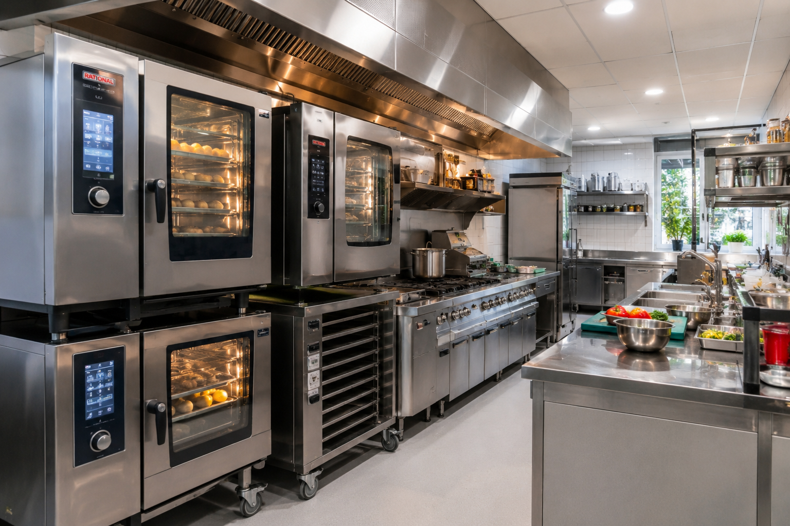
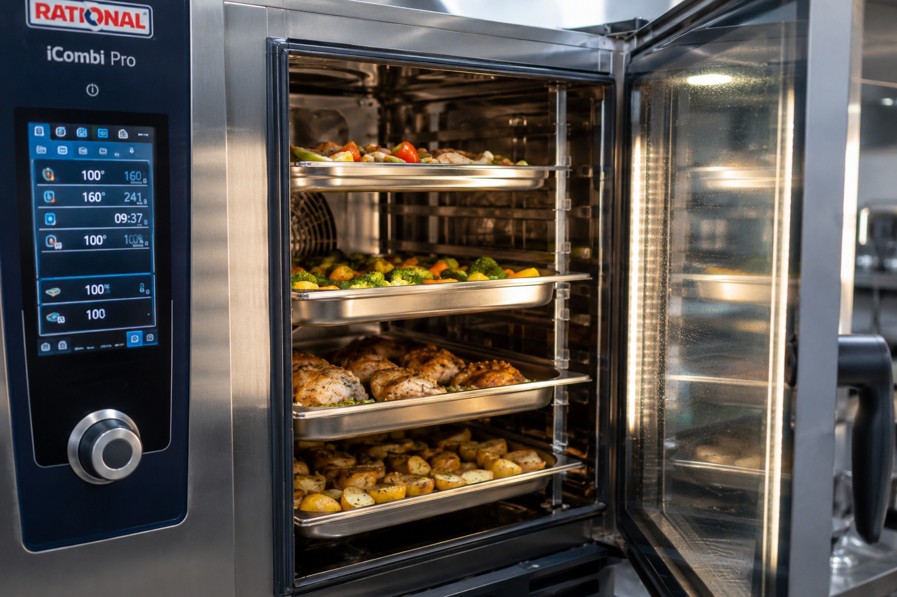

Four professionnel restaurant 2026 : guide complet pour choisir, dimensionner et financer votre équipement
Le four représente 15 à 25 % du budget équipement d'une cuisine professionnelle et conditionne directement la qualité de production, la rapidité de service et la rentabilité de votre établissement. Ce guide passe en revue les 5 types de fours professionnels (mixte, convection, sole, pizza, chariot), compare les prix 2026 par marque et par gamme, détaille les normes à respecter et vous aide à dimensionner, financer et entretenir votre investissement.

1. Pourquoi le four est l'investissement n°1 de votre cuisine
Dans une cuisine professionnelle, le four est l'équipement autour duquel tout s'organise. Il détermine la capacité de production (combien de portions par service), la polyvalence de votre carte (rôtissage, vapeur, pâtisserie, régénération) et, in fine, votre coût de revient par assiette.
Un four mal dimensionné ou inadapté coûte cher à plusieurs niveaux :
- Pertes matière — un four sans vapeur peut faire perdre 15 à 20 % du poids d'une viande par dessèchement, soit une perte directe sur le food cost.
- Perte de temps — un four sous-dimensionné oblige à multiplier les fournées et rallonge le temps de service.
- Surconsommation énergétique — un four surdimensionné tourne à vide et gaspille entre 20 et 40 % d'énergie.
- Maintenance prématurée — un modèle d'entrée de gamme utilisé intensivement tombe en panne 2 à 3 fois plus vite.
Chiffre clé : La cuisson représente environ 10 % des dépenses énergétiques totales d'un restaurant. Un four mixte économe peut réduire cette part de 20 à 30 % par rapport à un modèle ancien.
2. Les 5 types de fours professionnels
Chaque type de four répond à un usage spécifique. Le choix dépend de votre carte, de votre volume et de votre budget.
| Type de four | Principe | Usages principaux | Prix HT (indicatif) |
|---|---|---|---|
| Four à convection | Air chaud pulsé par ventilateur | Pâtisserie, viennoiseries, gratins, réchauffage | 1 000 – 6 000 € |
| Four mixte (combi) | Convection + vapeur (séparés ou combinés) | Polyvalent : rôti, vapeur, grill, régénération | 4 000 – 30 000 € |
| Four à sole | Chaleur statique sur sole en pierre réfractaire | Boulangerie, pâtisserie artisanale | 4 000 – 55 000 € |
| Four à pizza | Haute température (350-450 °C) | Pizzas, focaccias, flatbreads | 1 000 – 17 000 € |
| Four à chariot | Grande capacité (20+ niveaux GN) | Restauration collective, traiteur, liaison froide | 12 000 – 30 000 € |
Prix HT constatés sur le marché français en 2026, hors installation.
Four à convection (air pulsé)
Le modèle le plus accessible. Un ventilateur fait circuler l'air chaud autour des aliments, garantissant une cuisson homogène sur tous les niveaux. Il excelle pour les viennoiseries, les gratins et la pâtisserie sèche. Son principal défaut : l'absence de vapeur provoque un dessèchement rapide des viandes et poissons.
Four à sole (four de boulanger)
La sole en pierre réfractaire accumule la chaleur et la restitue par contact direct. Résultat : une croûte croustillante et dorée, une levée parfaite du pain. Incontournable pour la boulangerie artisanale. Attention : les modèles multi-étages (3 à 5 niveaux) prennent beaucoup de place et coûtent entre 15 000 et 55 000 € HT.
Four à pizza
Conçu pour atteindre des températures extrêmes (350 à 450 °C), il cuit une pizza napolitaine en 60 à 90 secondes. Trois options : électrique (1 000 à 5 000 €), gaz (1 600 à 5 000 €) ou à bois à sole rotative (10 000 à 17 000 €).
Four à chariot
Destiné à la restauration collective (cantines, hôpitaux, cuisines centrales). Le chariot GN entre directement dans le four, ce qui élimine les manipulations. Capacité typique : 20 niveaux, soit jusqu'à 240 repas par fournée. Remise en température de +3 °C à +63 °C en moins d'une heure, conformément à la réglementation.
3. Le four mixte (combi) : la référence en restauration
Le four mixte combine trois modes de cuisson dans un seul appareil : convection seule (rôti, gratinage), vapeur seule (légumes, poisson, cuisson douce) et mode combiné (viandes juteuses à l'extérieur doré). Cette polyvalence en fait l'équipement central de la cuisine moderne.
Avantages concrets du four mixte
- Réduction des pertes de poids — jusqu'à 20 % de perte en moins par rapport à un four à convection seul, ce qui se traduit directement sur le food cost.
- Polyvalence totale — un seul appareil remplace four à convection, étuve, bain-marie et cuiseur vapeur.
- Programmation de recettes — jusqu'à 256 programmes mémorisés (Unox CHEFTOP), garantissant une cuisson répétable par n'importe quel membre de la brigade.
- Auto-nettoyage — cycle automatique de 2 à 5 heures selon le modèle, évitant le nettoyage manuel quotidien de la chambre.
- Sonde à cœur — mesure la température au cœur de l'aliment, indispensable pour les cuissons basse température et le respect des normes HACCP de température.
Les marques de référence en 2026
| Marque | Gamme phare | Fourchette prix HT | Point fort |
|---|---|---|---|
| Rational | iCombi Pro / iCombi Classic | 6 000 – 30 000 € | Technologie iDensityControl, connectivité |
| Convotherm | easyTouch / easyDial | 5 000 – 25 000 € | Interface intuitive, ConvoClean+ |
| Unox | CHEFTOP One / Plus / Mind.Maps | 4 500 – 18 000 € | CLIMA™ (gestion humidité), compact |
| Lainox | Naboo | 6 000 – 22 000 € | Cloud connecté, partage de recettes |
| Electrolux Professional | SkyLine Premium / PremiumS | 4 500 – 12 000 € | Rapport qualité/prix, OptiFlow |
| Zanussi Professional | EasyPlus / FlexiChef | 3 500 – 10 000 € | Entrée de gamme robuste |
4. Comment dimensionner son four selon son activité
Le dimensionnement dépend de deux facteurs : le nombre de couverts par service et le type de cuisine. Un four sous-dimensionné crée des goulots d'étranglement au service ; un four surdimensionné gaspille énergie et budget.
Règle de base
1 niveau GN 1/1 pour 5 à 10 couverts par service. Un four 6 niveaux convient pour 30 à 60 couverts ; un 10 niveaux pour 60 à 100 couverts ; un 20 niveaux pour 100 à 200+ couverts.
| Couverts / service | Capacité recommandée | Format GN | Type d'établissement |
|---|---|---|---|
| 15 – 30 | 4 niveaux | GN 1/1 | Petit snack, food truck, laboratoire |
| 30 – 60 | 6 niveaux | GN 1/1 | Bistrot, brasserie, crêperie |
| 60 – 100 | 10 niveaux | GN 1/1 | Restaurant traditionnel, hôtel |
| 100 – 200 | 10 niveaux | GN 2/1 | Brasserie grand volume, traiteur |
| 200 – 500 | 20 niveaux | GN 1/1 ou GN 2/1 | Restauration collective, cuisine centrale |
GN 1/1 = 530 × 325 mm (standard restauration). GN 2/1 = 530 × 650 mm (collectivité, gros volumes).
Puissance électrique nécessaire
| Niveaux | Puissance typique | Alimentation | Dimensions indicatives (L × P × H) |
|---|---|---|---|
| 4 niveaux | 4,6 – 5,5 kW | Monophasé 230V possible | ~600 × 600 × 580 mm |
| 6 niveaux | 10 – 13,8 kW | Triphasé 400V | ~850 × 840 × 750 mm |
| 10 niveaux | 13,8 – 18,3 kW | Triphasé 400V | ~850 × 840 × 1 070 mm |
| 20 niveaux (gaz) | Jusqu'à 80 kW | Gaz naturel + électrique | ~1 100 × 1 200 × 1 800 mm |

5. Gaz ou électrique : comparaison technique et économique
Le choix entre gaz et électrique dépend de votre installation existante, de votre volume d'activité et de vos priorités (précision vs économie).
| Critère | Four gaz | Four électrique |
|---|---|---|
| Coût énergétique | ~25 % moins cher à l'usage | kWh plus cher, mais rendement supérieur |
| Coût d'achat | 10 à 20 % plus cher | Plus accessible |
| Installation | Raccordement gaz + certificat Qualigaz | Triphasé 400V (la plupart des modèles) |
| Montée en température | Plus rapide | Plus lente, mais plus régulière |
| Précision | Moins précise (± 5-10 °C) | Excellente (± 1-2 °C) |
| Entretien | Brûleurs à nettoyer + contrôle gaz annuel | Moins d'entretien mécanique |
| Consommation / cycle | ~1,1 kWh | ~0,78 kWh |
Estimation du coût énergétique annuel
Pour un four mixte 10 niveaux utilisé 6 heures par jour, 300 jours par an :
- Électrique — jusqu'à 18 000 kWh/an, soit environ 3 600 à 4 500 €/an (au tarif pro moyen de 0,20 à 0,25 €/kWh).
- Gaz — consommation brute plus élevée mais tarif du kWh gaz plus bas (~0,08 €/kWh) : environ 2 500 à 3 200 €/an.
6. Comparatif de prix 2026 par type et par gamme
Les prix varient considérablement selon le type de four, le nombre de niveaux, les fonctionnalités embarquées et la marque. Voici les fourchettes constatées sur le marché français en 2026.
Fours à convection
| Gamme | Capacité | Prix HT | Exemples |
|---|---|---|---|
| Entrée de gamme | 3-4 niveaux, compact | 1 000 – 3 000 € | Bartscher, FM Industrial |
| Milieu de gamme | 6 niveaux GN 1/1 | 2 000 – 4 000 € | Zanussi, Smeg Pro |
| Haut de gamme | 10 niveaux, programmable | 4 000 – 6 000 € | Unox LineMiss, Electrolux |
Fours mixtes (combi)
| Gamme | Capacité / fonctions | Prix HT | Exemples |
|---|---|---|---|
| Entrée de gamme | 6 niv., commande manuelle | 1 500 – 4 000 € | Zanussi EasyPlus, Bartscher |
| Milieu de gamme | 6-10 niv., écran digital, sonde | 4 000 – 12 000 € | Electrolux SkyLine, Unox CHEFTOP One |
| Haut de gamme | 10-20 niv., tactile, auto-clean | 12 000 – 30 000 € | Rational iCombi Pro, Convotherm easyTouch |
Fours à sole et à pizza
| Type | Configuration | Prix HT |
|---|---|---|
| Four à sole — 1 étage | Boulangerie / pâtisserie | 4 000 – 10 000 € |
| Four à sole — 3 étages | Boulangerie artisanale | 15 000 – 40 000 € |
| Four à sole — 4-5 étages | Boulangerie industrielle | 17 000 – 55 000 € |
| Four à pizza électrique | 1-2 chambres | 1 000 – 5 000 € |
| Four à pizza gaz | 1-2 chambres | 1 600 – 5 000 € |
| Four à pizza bois / sole rotative | Artisanal | 10 000 – 17 000 € |
7. Normes et réglementation
L'installation d'un four professionnel est encadrée par plusieurs normes européennes et françaises. Le non-respect de ces normes peut entraîner des sanctions lors d'un contrôle sanitaire.
Marquage CE obligatoire
Tout four professionnel vendu en France doit porter le marquage CE, attestant sa conformité à la directive Basse Tension 2014/35/UE (pour les équipements électriques de 50 à 1 000 V AC). Le fabricant doit fournir une déclaration UE de conformité et une documentation technique complète.
Ventilation et extraction (NF EN 16282)
La norme NF EN 16282 régit la ventilation en cuisine professionnelle. Elle est obligatoire dès que la puissance nominale des appareils de cuisson dépasse 20 kW (catégorie « grandes cuisines »). Les exigences principales :
- Ventilateurs capables de fonctionner 2 heures consécutives à 400 °C
- Filtres de hottes : dégraissage obligatoire minimum 1 fois par semaine
- Séparateurs d'aérosols conformes, dispositifs anti-incendie
Raccordement gaz (NF DTU 61.1)
Si vous optez pour un four à gaz, l'installation doit respecter la norme NF DTU 61.1 :
- Robinet de coupure (crosse de sécurité) obligatoire à l'entrée de chaque appareil
- Robinets facilement accessibles et identifiables
- Certificat de conformité gaz obligatoire délivré par un organisme agréé (Qualigaz)
- Contrôle obligatoire pour toute installation ou modification importante
Normes HACCP applicables
Le four doit être intégré dans votre plan de maîtrise sanitaire (PMS) :
- Relevés de température à cœur pour chaque type de cuisson (sonde obligatoire)
- Procédure de nettoyage/désinfection documentée
- Enregistrement des opérations de maintenance
8. Entretien et durée de vie : protéger son investissement
Un four professionnel bien entretenu dure deux fois plus longtemps qu'un four négligé. Voici le protocole d'entretien recommandé.
| Fréquence | Actions | Par qui |
|---|---|---|
| Quotidien | Nettoyage de la chambre de cuisson (manuel ou cycle auto), nettoyage des façades et joints de porte | Brigade |
| Hebdomadaire | Test commande de pilotage, vérification joints, contrôle sel adoucisseur (four mixte) | Chef / responsable |
| Mensuel | Vérification de l'étanchéité, nettoyage filtres, test sonde à cœur | Chef / responsable |
| Semestriel / annuel | Contrôle technique complet, détartrage circuit vapeur, remplacement pièces d'usure, mise à jour logicielle | Prestataire spécialisé |
Durée de vie par scénario
| Scénario | Durée de vie moyenne | Coût total sur la période |
|---|---|---|
| Sans contrat de maintenance | 3 à 5 ans | Achat + réparations ponctuelles (imprévisibles) |
| Avec contrat de maintenance | 7 à 10 ans | Achat + 300 à 800 €/an (prévisible) |
| Haut de gamme + maintenance premium | 8 à 12 ans | Achat + contrat constructeur (sur devis) |
9. Financer son four professionnel
L'investissement dans un four professionnel peut être allégé par plusieurs dispositifs cumulables. Voici les options disponibles en 2026.
Crédit-bail (leasing)
Le crédit-bail permet de financer votre équipement sans apport initial important. Organismes spécialisés CHR ou Bpifrance : possibilité de crédit-bail à taux zéro sur 36 mois avec garantie Bpifrance (jusqu'à 70 % du montant). L'équipement n'apparaît pas au bilan, ce qui préserve votre capacité d'emprunt.
Subventions régionales
Certains conseils régionaux subventionnent l'investissement dans le cadre de programmes de modernisation des commerces : 20 à 40 % du montant HT sous forme de subventions directes, avances remboursables ou prêts à taux zéro. Renseignez-vous auprès de votre CCI ou de la page aides à la création.
Certificats d'Économie d'Énergie (CEE)
La prime CEE récompense l'achat d'équipements économes en énergie. La 6e période CEE (2026-2030) renforce les objectifs de 70 %. Condition : travaux réalisés par un professionnel RGE. Le montant de la prime dépend de la performance énergétique de l'équipement.
Amortissement fiscal
| Méthode | Durée | Avantage |
|---|---|---|
| Linéaire (référence) | 5 à 7 ans | Régularité des charges, simplicité |
| Dégressive | 5 à 7 ans (coefficient majoré) | Charges plus fortes les premières années |
| Suramortissement éco | +40 % du prix HT | Pour équipements éco-responsables (sous conditions) |
Exemple de cumul d'aides : Un four mixte à 8 000 € HT peut être financé avec une prime CEE de ~800 €, un crédit-bail Bpifrance à taux zéro sur 36 mois, et un suramortissement fiscal de 40 % (3 200 € d'économie d'impôt). Résultat : le coût réel net peut descendre sous 4 000 €.
10. FAQ — Four professionnel restaurant
Four mixte ou four à convection : lequel choisir ?
Le four mixte est plus polyvalent car il combine convection et vapeur, réduisant les pertes de poids de 15 à 20 %. Le four à convection convient si vous faites principalement de la pâtisserie ou des gratins, avec un budget plus serré (1 500 à 5 000 € contre 4 000 à 30 000 € pour un combi). Pour plus de 50 couverts avec une carte variée, le combi est l'investissement le plus rentable.
Quel budget prévoir pour un four professionnel ?
Les fourchettes HT en 2026 : convection 1 000 à 6 000 €, mixte 4 000 à 30 000 €, sole 4 000 à 55 000 €, pizza électrique 1 000 à 5 000 €, pizza bois 10 000 à 17 000 €. Ajoutez 500 à 2 000 € d'installation et 300 à 800 €/an de maintenance.
Faut-il choisir un four gaz ou électrique ?
Le gaz coûte ~25 % moins cher à l'usage mais nécessite un raccordement gaz et un certificat Qualigaz. L'électrique est plus simple à installer et plus précis. Pour moins de 80 couverts en zone urbaine, l'électrique triphasé est le meilleur compromis. Au-delà de 150 couverts ou si vous êtes déjà raccordé au gaz, le gaz est plus rentable.
Quelle capacité de four pour 50 couverts par service ?
Un four mixte 6 niveaux GN 1/1 est le minimum (30 à 50 portions simultanées). Si vous faites 2 services (100 couverts/jour), un 10 niveaux offre plus de confort. Règle de base : 1 niveau GN 1/1 pour 5 à 10 couverts.
Quelle est la durée de vie d'un four professionnel ?
Sans maintenance : 3 à 5 ans. Avec contrat de maintenance professionnel : 7 à 10 ans. Les marques haut de gamme (Rational, Convotherm) tiennent 8 à 12 ans avec entretien. L'amortissement fiscal recommandé est de 5 à 7 ans.
Le four mixte peut-il remplacer un four à pizza ?
Partiellement. Un combi cuit des pizzas correctes à 280-300 °C, mais ne monte pas aux 350-450 °C nécessaires pour une napolitaine authentique (60-90 s). Si la pizza représente plus de 20 % de votre carte, un four dédié est indispensable. Pour des pizzas d'appoint ou flatbreads, le combi fait le travail.
Quelles aides financières pour acheter un four professionnel ?
Plusieurs dispositifs sont cumulables : crédit-bail Bpifrance à taux zéro (36 mois), subventions régionales (20 à 40 % HT), primes CEE pour équipements performants, suramortissement fiscal 40 %. En cumulant, il est possible de financer jusqu'à 65 % du prix.